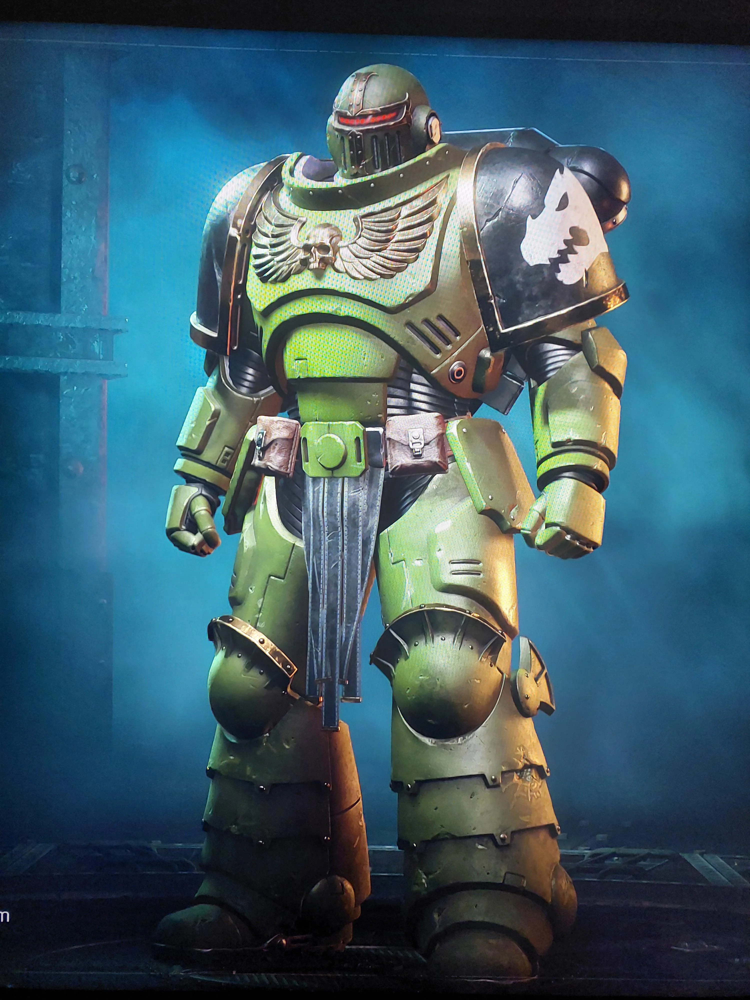
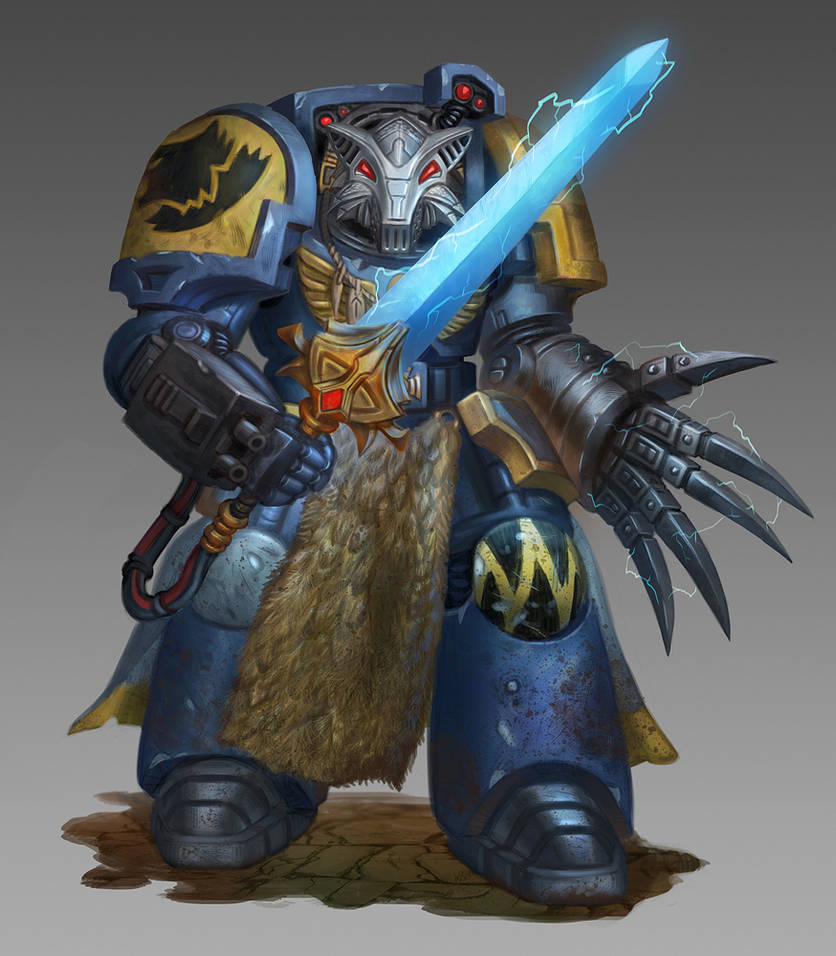
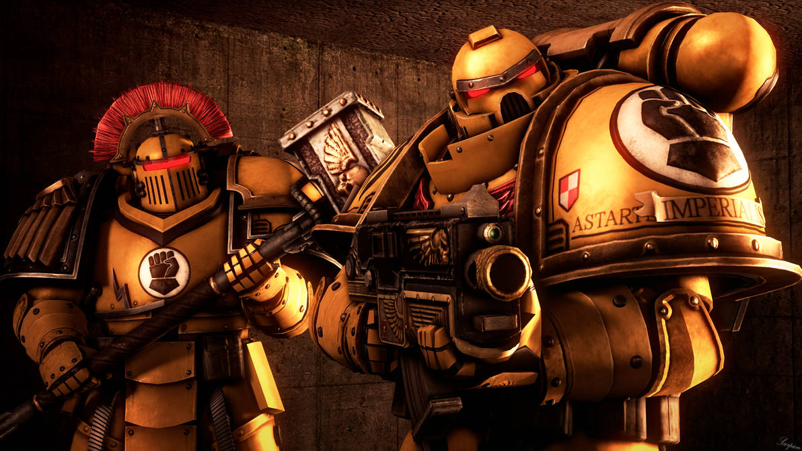
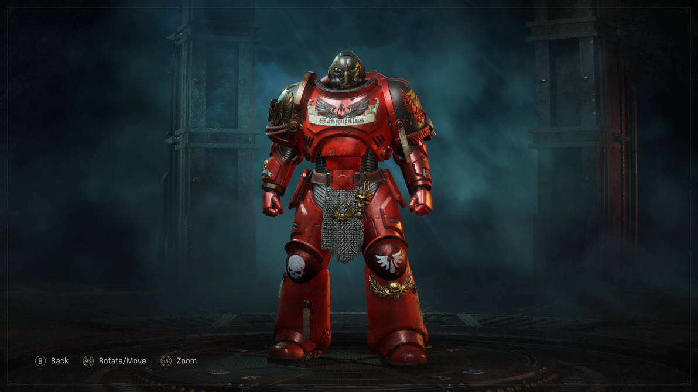
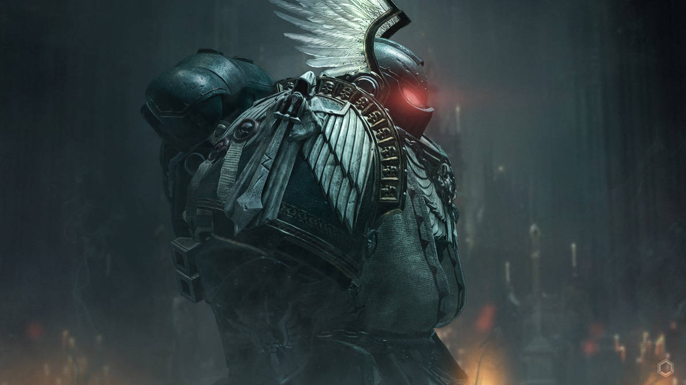
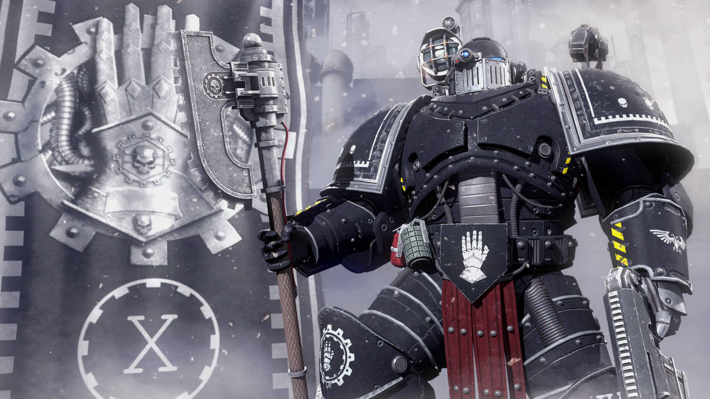
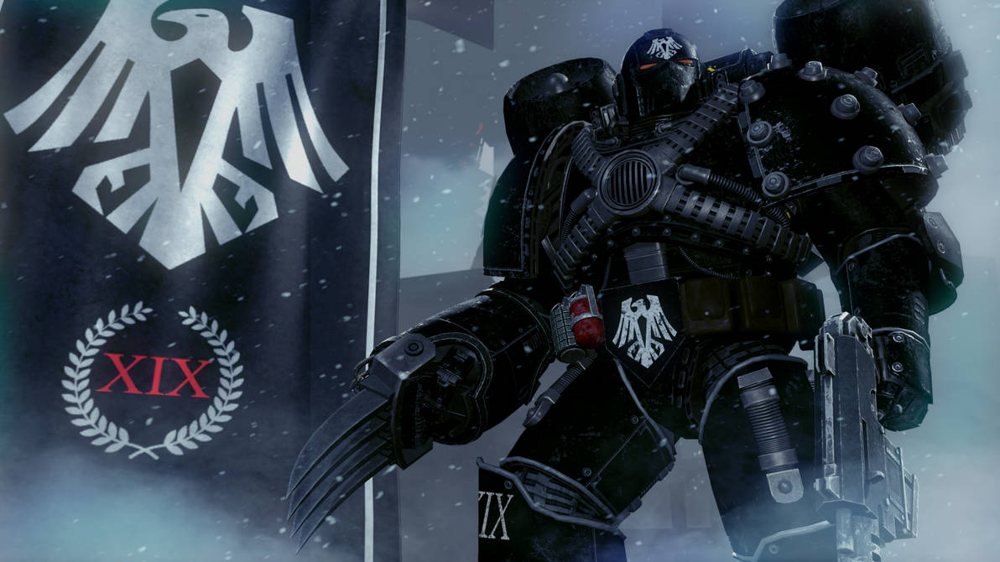
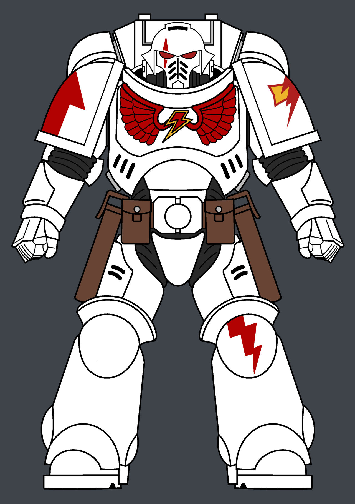

Os Salamanders são uma das nove Legiões de Space Marines, conhecidos por sua habilidade em combate corpo a corpo e por sua afinidade com o fogo. Eles são originários do planeta Nocturne, um mundo vulcânico e hostil, o que os tornou resistentes e adaptáveis. Os Salamanders são famosos por sua devoção à humanidade e por sua habilidade em criar armas e armaduras de alta qualidade. Eles são liderados por Vulkan, um Primarca lendário que é considerado um dos maiores ferreiros do Imperium.

Os Ultramarines são uma das nove Legiões de Space Marines, conhecidos por sua disciplina e habilidade em combate em diversas condições. Eles são originários do planeta Ultramar, um mundo próspero e civilizado, o que os tornou versáteis e adaptáveis. Os Ultramarines são famosos por sua devoção à humanidade e por sua habilidade em liderar missões de grande importância. Eles são liderados por Roboute Guilliman, um Primarca lendário que é considerado um dos maiores estrategistas do Imperium.

Os Space Wolves são uma das nove Legiões de Space Marines, conhecidos por sua lealdade inabalável e habilidade em caçar os inimigos do Imperium. Eles são originários do planeta Fenris, um mundo gelado e selvagem, o que os tornou resistentes e adaptáveis. Os Space Wolves são famosos por sua devoção à humanidade e por sua habilidade em liderar missões de grande importância. Eles são liderados por Leman Russ, um Primarca lendário que é considerado um dos maiores guerreiros do Imperium.

Os Imperial Fists são uma das nove Legiões de Space Marines, conhecidos por sua disciplina e habilidade em combate em diversas condições. Eles são originários do planeta Terra, o que os tornou versáteis e adaptáveis. Os Imperial Fists são famosos por sua devoção à humanidade e por sua habilidade em liderar missões de grande importância. Eles são liderados por Titus, um Primarca lendário que é considerado um dos maiores estrategistas do Imperium.

Os Blood Angels são uma das nove Legiões de Space Marines, conhecidos por sua devoção à humanidade e por sua habilidade em liderar missões de grande importância. Eles são originários do planeta Medina, um mundo habitado por uma raça de seres humanos com uma forte conexão com o espírito. Os Blood Angels são famosos por sua capacidade de lutar com coragem e honra, mesmo diante das maiores adversidades. Eles são liderados por Sanguinius, um Primarca lendário que é considerado um dos maiores mestres da arte marcial do Imperium.

Os Dark Angels são uma das nove Legiões de Space Marines, conhecidos por sua devoção à humanidade e por sua habilidade em liderar missões de grande importância. Eles são originários do planeta Kalendae, um mundo habitado por uma raça de seres humanos com uma forte conexão com o espírito. Os Dark Angels são famosos por sua capacidade de lutar com coragem e honra, mesmo diante das maiores adversidades. Eles são liderados por Lion El'Johnson, um Primarca lendário que é considerado um dos maiores mestres da arte marcial do Imperium.

Os Iron Hands são uma das nove Legiões de Space Marines, conhecidos por sua devoção à humanidade e por sua habilidade em liderar missões de grande importância. Eles são originários do planeta Iacon, um mundo habitado por uma raça de seres humanos com uma forte conexão com o espírito. Os Iron Hands são famosos por sua capacidade de lutar com coragem e honra, mesmo diante das maiores adversidades. Eles são liderados por Ferrus Manus, um Primarca lendário que é considerado um dos maiores mestres da arte marcial do Imperium.

Os Raven Guard são uma das nove Legiões de Space Marines, conhecidos por sua devoção à humanidade e por sua habilidade em liderar missões de grande importância. Eles são originários do planeta Corax, um mundo habitado por uma raça de seres humanos com uma forte conexão com o espírito. Os Raven Guard são famosos por sua capacidade de lutar com coragem e honra, mesmo diante das maiores adversidades. Eles são liderados por Corax, um Primarca lendário que é considerado um dos maiores mestres da arte marcial do Imperium.

Os White Scars são uma das nove Legiões de Space Marines, conhecidos por sua devoção à humanidade e por sua habilidade em liderar missões de grande importância. Eles são originários do planeta Kaurava, um mundo habitado por uma raça de seres humanos com uma forte conexão com o espírito. Os White Scars são famosos por sua capacidade de lutar com coragem e honra, mesmo diante das maiores adversidades. Eles são liderados por Jaghatai Khan, um Primarca lendário que é considerado um dos maiores mestres da arte marcial do Imperium.
